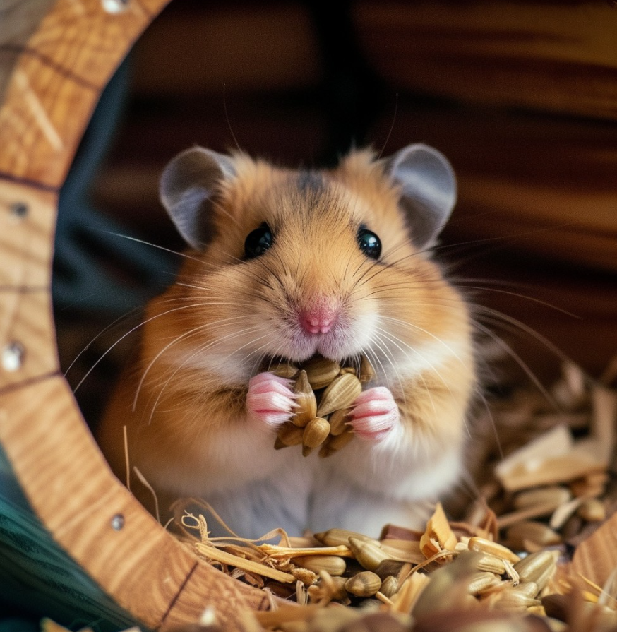
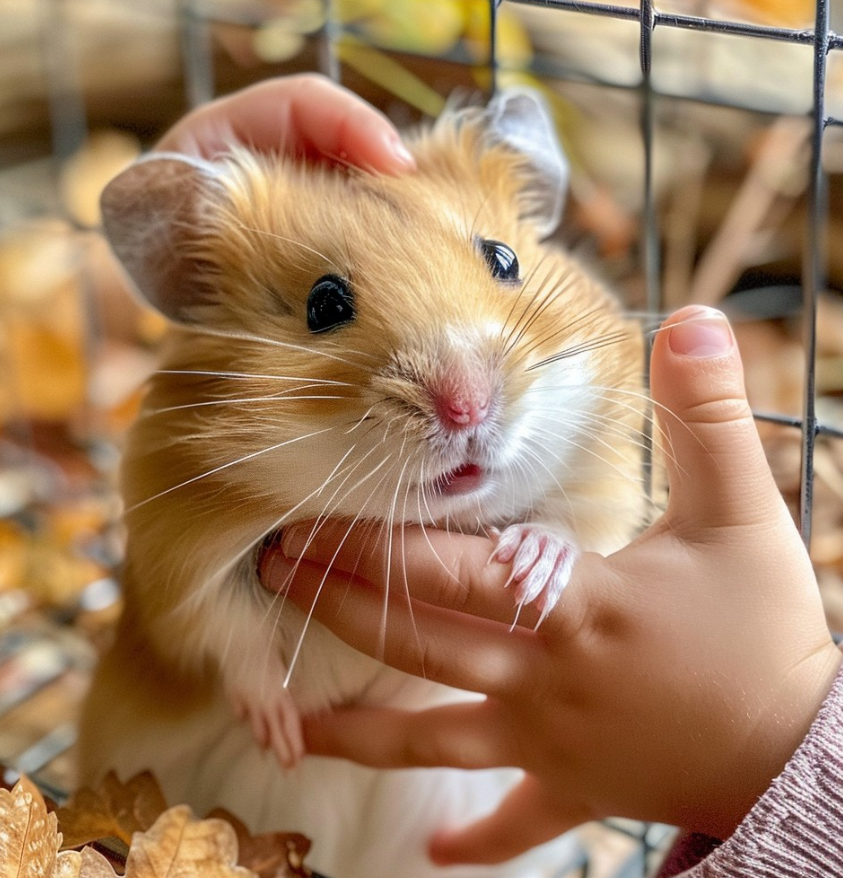

Caring for hamsters goes beyond providing a cage and food. Hamsters are curious, energetic animals that require mental stimulation, exercise, and a safe environment to thrive. Providing toys, tunnels, and climbing structures, as well as regularly letting them out of the cage for supervised playtime, is crucial to their mental and physical well-being. It's also essential to maintain a clean, spacious cage with fresh food, water, and hiding places, as hamsters can be sensitive to changes in their environment.
A balanced diet is key to keeping your hamster healthy. Hamsters need more than just commercial food; a variety of fresh fruits, vegetables, and occasional treats help provide necessary nutrients. Regular cleaning of the cage and monitoring of your hamster's health are important to prevent issues like respiratory problems or wet tail. By creating an enriching and healthy environment, your hamster will remain happy, active, and well-cared-for.
Getting a Hamster is a big decision! Here's a reminder of things to consider before bringing a friend home:
Remember: Getting a hamsteer is a long-term commitment! Make sure you're ready to provide a loving and responsible home for your new companion.
Hamsters are omnivores and need a balanced diet that includes a mix of protein, fat, and carbohydrates. Provide a high-quality commercial hamster food as the main staple, and supplement with fresh fruits and veggies daily, in moderation (about 1-2 teaspoons per day). Avoid giving too many treats, as they can lead to obesity and other health issues. Fresh water should always be available, and rotate food and water dishes regularly to prevent bacterial growth.
Regular health checks are crucial to ensure your hamster stays healthy. Schedule regular check-ups with a veterinarian experienced in caring for small animals, and monitor your hamster's behavior, appetite, and stool quality daily. Keep an eye out for signs of illness, such as lethargy, wetness around the eyes or nose, or changes in appetite or stool quality. Keep a first-aid kit on hand for minor injuries or illnesses.
Hamsters are meticulous about their grooming and need regular cleaning to stay healthy. Clean the cage and accessories regularly to prevent bacterial growth, and change bedding completely every week. Clean food and water dishes daily, and provide a sand bath or shallow dish of sand for your hamster to clean itself.
Hamsters are curious and love to explore, but they need a safe environment to prevent injuries. Provide a spacious, escape-proof cage with a solid bottom, and keep the cage away from drafts, direct sunlight, and extreme temperatures. Use hamster-safe materials for toys and accessories, and avoid placing the cage near other pets or children who may disturb your hamster.
Hamsters need regular exercise to stay healthy and happy. Provide a hamster wheel and other toys that encourage exercise and play, and rotate toys regularly to prevent boredom. Create a hamster-safe play area outside of the cage for supervised playtime, and encourage exploration and play with tunnels, tubes, and other interactive toys. Handle your hamster gently and carefully, as they are small and fragile, and can be injured easily. Handle them gently and carefully, making sure to support their body and not to squeeze them too tightly.
As for how much attention a hamster should get, it's recommended to spend at least 30 minutes to 1 hour per day interacting with your hamster, including handling and cuddling, playing with toys and interactive games, cleaning the cage and accessories, and monitoring their behavior and health. However, it's also important to respect your hamster's boundaries and not to over-handle them, as they need time to rest and relax.
